投稿画像のデザイン案
iN.app.tool の「開発メモ」と対になる画像の案です。アプリごとにデザインを変える前提です（決定：2026-11-02）。Web版の紹介画像のデザインにもそろえていません。画面は、アプリで撮影した本物の画面を使っています（縮小した見本）。文章は仮です。
対になる画像、という考え方
- 文章だけの投稿ももちろんある（画像なし）。画像は、画面を見せたい話・数字や変化を見せたい話にだけ付ける。
- 画像には、文章と同じ話を1つだけ入れる（画面1枚、またはひとこと）。文章の言い換えは入れない。
- 画像に入れる画面は、デモデータの本物の画面。実際の家計・旅行の記録は写さない。
- ページ番号は入れない。「無料」「限定」などの言葉も入れない。
- スマホの画面を載せるときは、iPhoneの実物の比率（402:874＝iPhone 16 Pro）にして、状態表示は「9:41・電波がフル・Wi-Fi・バッテリー満タン（充電中の印なし）」にそろえる。ダイナミックアイランドも付ける（決定：2026-11-02）。
- 文字は少なく、中央に収める（インスタで左右が切られても欠けないように）。
- 画像のデザインは、各アプリの画面に出てくる部品（帯・リング・マス・旅行券・タグ・切手・シートなど）を使って作る（決定：2026-11-02）。
サイズ
| 場所 | サイズ | メモ |
|---|---|---|
| Instagram フィード | 1080 × 1350（4:5） | 下の見本はこの縦横比。文字と画面は中央に収める |
| Threads | 同じ画像をそのまま | Web版の画像は正方形にしていました。今回は、作る手間を減らすため、4:5の1種類にそろえる案（★） |
| ストーリーズ | 1080 × 1920 | 必要になったら、同じ型から作る |
アプリごとのデザイン（決定）
アプリの雰囲気がそのまま伝わるように、色・文字の感じをアプリごとに変えます。どちらも、アプリで実際に使っている色です。
将来、アプリが増えたら、そのアプリの色で同じ型を作ります。アカウント共通なのは、冒頭の「開発メモ #番号｜アプリ名」の形と、下に小さく入れる「iN」だけです。
よくばりかけいぼのアプリ本来のデザイン（モカ色の上の帯・枠なしの明細・丸いピル・リング・小さなマスのカレンダー）を部品にして作った見本です。各案の下に、もとにした画面を書きました。文章は仮。
レシートを撮ると、
日付と金額が入る
読み取りは、端末の中だけ。
読めなかった分は、あとで確認できます。
iN｜iPhoneアプリ 作ってます
上のモカ色の帯、月の切りかえ（◀ ▶）の形、丸いピル。もと：ホーム画面・明細画面の上部。
日付の列を「#番号」にした、枠のない明細。もと：明細画面。日付・種類は仮。
すべて、一致しました
別の方法で出した答えと、照らし合わせました。
iN｜iPhoneアプリ 作ってます
ホーム画面の収支リングの形。数字や「確かめたこと」向き。もと：ホーム画面。68,940は作業ログ（10/26）。投稿の日に最新の数字へ。
作っている家計簿のこと
iN｜iPhoneアプリ 作ってます
絵文字のタイル＋項目名＋「›」。もと：ホームの「パートナーとの精算」行・設定画面。アピール・紹介向き。
毎日、少しずつ。
小さなマスが、ゆっくり埋まっていきます。
ホームの「No Money Day」の形。塗ってある日（21・22・24・26日）は見本の仮。実際は、作業ログの日付から作る。
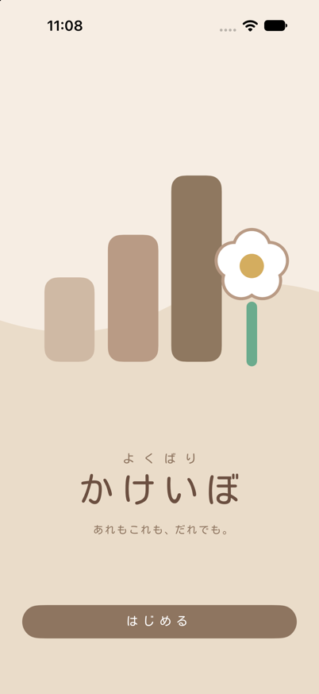
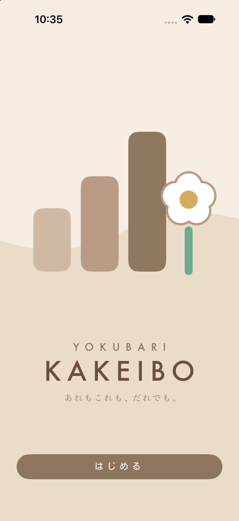
はじめの画面、迷ったのはこの2つ
明細の「明細／日次」の切りかえ（丸いピル）の形で、案を並べる。左右は実際に検討した「はじめの画面」の案。
あとで確認する（未確認で保存）
上の切りかえ（支出｜収入｜振替）の下線、大きな数字、絵文字のタイル、下の丸いボタン。もと：取引を追加する画面。
いま、作っているもの
開発メモ｜iN｜iPhoneアプリ 作ってます
ホームの「カテゴリ別予算」の横棒。割合ではなく、できた／次回以降の状態を見せる。もと：ホーム画面。状態は作業ログ（10/26）より。
レシートを撮ると、
日付と金額が入る
読み取りは、端末の中だけ。
読めなかった分は、あとで確認できます。
iN｜iPhoneアプリ 作ってます
アプリのダークモードの色（背景 #1A1816）。案1と同じ作りで、夜の投稿向き。もと：ダークモードの配色。
月ごとに「締める」
確認した月は、あとから書き換えない。
メモも残せます。
画面の下の、真ん中が＋の丸いタブバーごと見せる。アプリ画面そのものの雰囲気。もと：ホーム・明細の下のタブ。
YOUR TRAVELSのアプリ本来のデザイン（明朝の大きな見出し・細い罫線の表・旅行券・荷物タグ・切手・下から出るシート）を部品にして作った見本です。各案の下に、もとにした画面を書きました。文章は仮。
1,747の市区町村を、
地図に残せます。
日本で、記録できる場所
開発メモ｜iN｜iPhoneアプリ 作ってます
「26つの県、28つの町を、めぐりました。」の見出しと、県・市区町村・空港・駅の表。もと：記録画面。数は画面の分母（47・1,747・97・890）。
2026
1つの記録に
二重の枠・点線・出発の丸い印。もと：旅の一覧「切符」。番号・日付・種類は仮。
1回の旅を、
1つの記録に
いくつの県をまわっても、
まとめて残せます。
左のピンクのタグ＋白いカード。もと：旅の一覧「タグ」。
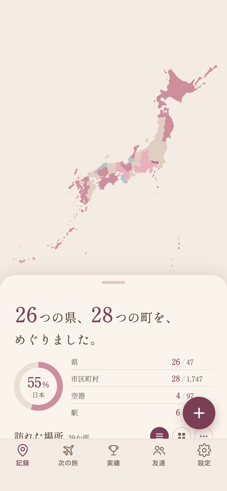
#001
白い切手の枠に画面を入れ、丸い印を押す。切手の下に絵文字＋名前。もと：記録画面の切手カード。
1回の旅を、
1つの記録に。
県も国も、1つの旅にまとめて残せます。
県国タグ開発メモ｜iN｜iPhoneアプリ 作ってます
地図の上に、クリーム色のシートが出ている形。丸いチップは、記録画面のタグと同じ形。もと：記録画面。
開発メモ
タイトル・日付・右にえんじの数字。もと：旅の一覧「リスト」。日付・番号は仮。
育っていきます
バッジの一列だけを大きく。バッジの丸・4つの点は、アプリそのまま。もと：実績のバッジ画面。
ここまで変わりました
左は旧アイコン、右はいまのアイコン。どちらも実際のファイル。
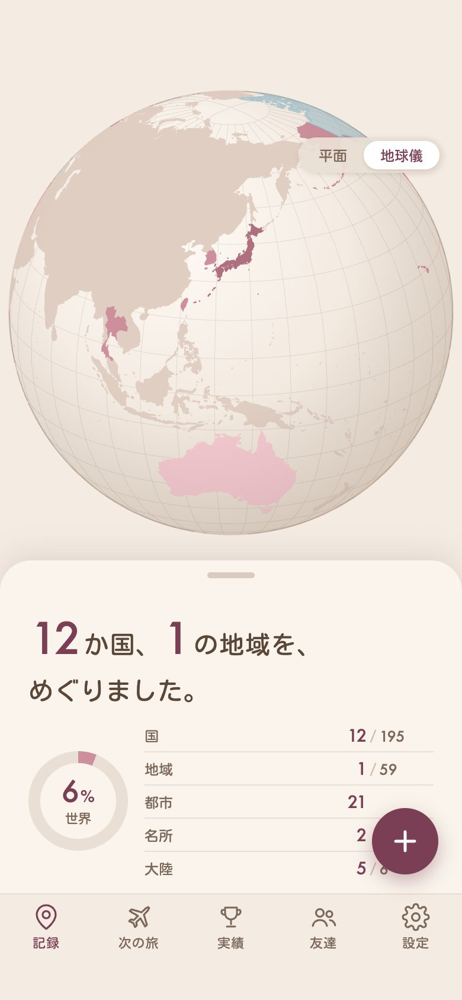
195の国と、
59の地域を、地図に。
平面と地球儀を、切りかえて見られます
開発メモ｜iN｜iPhoneアプリ 作ってます
地球儀の画面の上に、シートで数字。世界の画面は丸ゴシック（Kosugi Maru）。もと：世界の記録画面（国 195・地域 59）。
開発メモ｜iN｜iPhoneアプリ 作ってます
見出し・小さな区分名・罫線の行・右の「›」。もと：設定画面。画面の字体（ゴシック系）は、実際のアプリの字体を要確認。
全部で24個
バッジの丸・色の輪・4つの点を大きく。もと：実績のバッジ画面（24個・4段階・「県めぐり」）。バッジの色は、画面の見た目から近い色で再現。
よくばりかけいぼ用。モカ色・丸い文字。使っている画面は、アプリで撮影した本物（デモデータ）です。見本の文章は仮。
日付と金額が入る
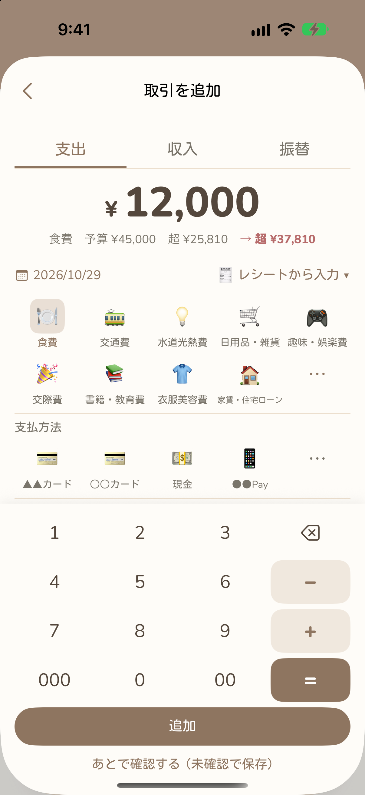
画面の下側を枠の外に切って見せる。いちばん作りやすい。
日付と金額が入る
罫線の紙に画面を貼った形。「開発メモ」という名前に合う。
迷ったのはこの2つ
実際に検討した「はじめの画面」の案2つ。どちらを採用したかは、ここでは決めつけていません。
予算の残りが分かる
見せたい1か所だけを大きく。画面全体は、うしろに薄く。
予算との差が出ます
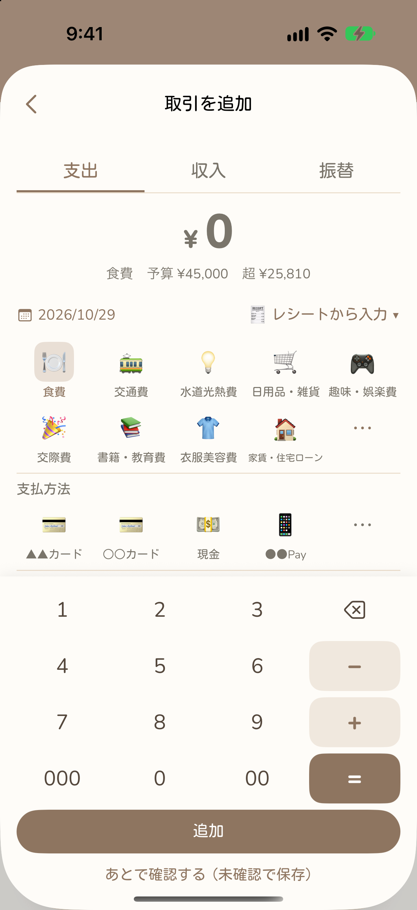
変化や手順を、左から右へ。本物の画面を並べるだけで作れる。
ずらせます
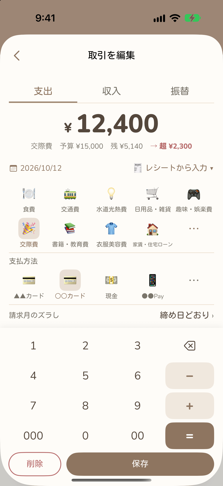
請求月を選べる
「締め日どおり」
画面にふせんで一言。画面の中の言葉を、そのまま拾う。
確かめました
画面なし。作業記録にある数字（計算の確認 68,940項目）を使う例。投稿の日に最新の数字へ直す。
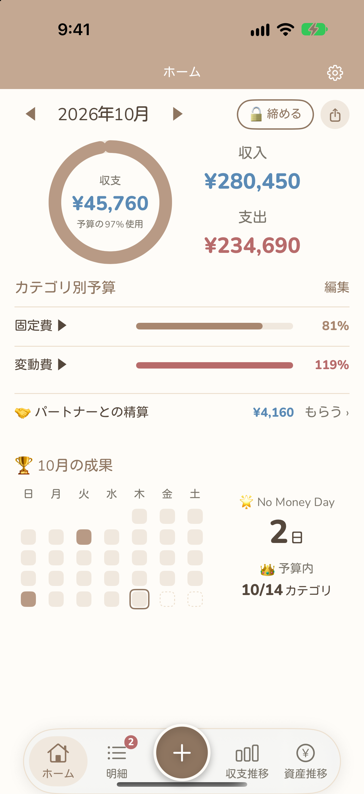
2つの画面を、少し傾けて重ねる。ちがう画面の組み合わせを見せたいとき。
使いぐあいが見える
画面の1か所を、丸く切り抜いて大きく。「一部を拡大」の丸い版。
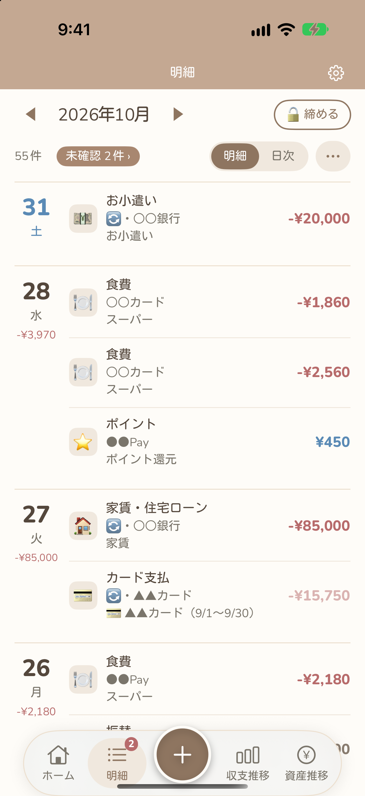
画面を大きく全面に出し、下の帯に文字。画面そのものを見せたい投稿向き。
よくばりかけいぼ
ずらせます
どの月の請求にするか。
取引ごとに選べます。
左に画面、右に文字。文字が多めの投稿向き。
ひとことを吹き出しにして、画面に話させる。つぶやきに近い、やわらかい形。
開発メモ｜よくばりかけいぼ
白い縁の写真風に画面を貼る。アルバム・記録のような雰囲気。
YOUR TRAVELS用。クリームとえんじ・明朝の見出し。使っている画面は、アプリで撮影した本物です。見本の文章は仮。
1つの記録に
地図の画面は、色がきれいに出るので相性がよい。
1つの記録に
旅のメモ・切り抜きの雰囲気。
ここまで変わりました
左は旧アイコン（いちばん古い版）、右はいまのアイコン。どちらも実際のファイルです。
育っていきます
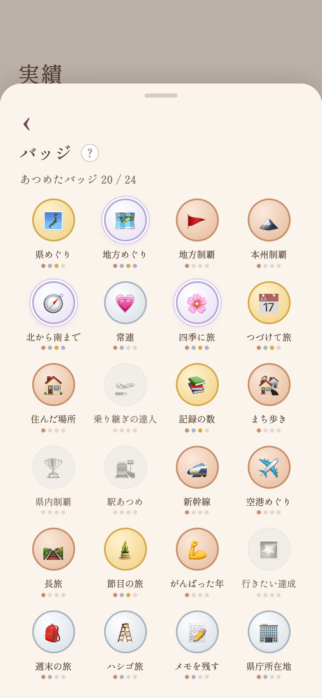
バッジの一列だけを大きく。全体は、うしろに薄く。
地図に色がつく
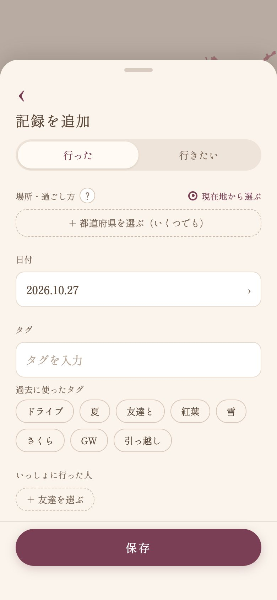
記録→地図→バッジ。3枚のときは、1枚ずつを小さくする。
選べます
できます
付けられます
画面の中の言葉を、そのまま拾う。
画面なし。アプリの画面にある数字（28 / 1,747）と、地図の出どころの記録を使う例。
2つの画面を、少し傾けて重ねる。ちがう画面の組み合わせを見せたいとき。
リングで見られます
画面の1か所を、丸く切り抜いて大きく。「一部を拡大」の丸い版。
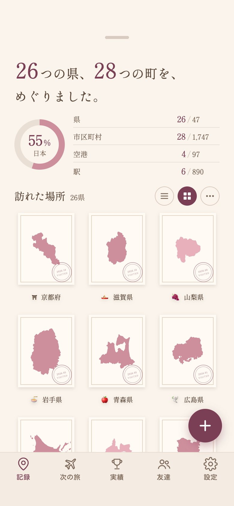
画面を大きく全面に出し、下の帯に文字。画面そのものを見せたい投稿向き。
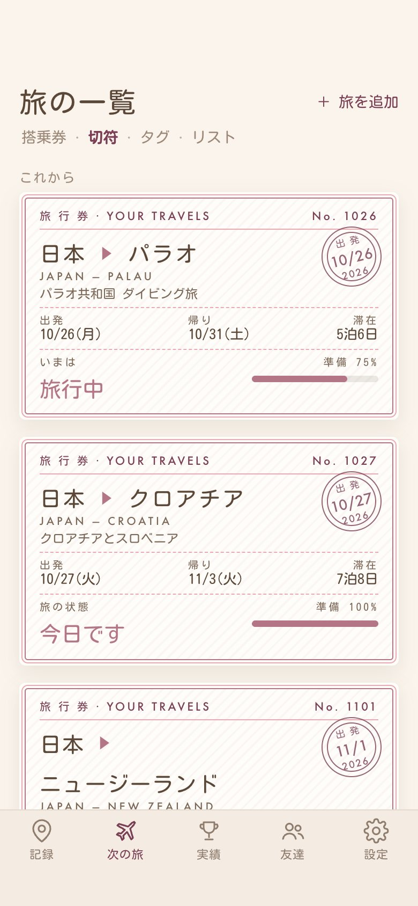
YOUR TRAVELS
4つの形
好きな見せ方を選べます。
左に画面、右に文字。文字が多めの投稿向き。
ひとことを吹き出しにして、画面に話させる。つぶやきに近い、やわらかい形。
開発メモ｜YOUR TRAVELS
白い縁の写真風に画面を貼る。アルバム・記録のような雰囲気。
投稿の流れ（案）
作った順に、遡って出す流れです。番号は、アプリごとに数えます（よくばりかけいぼ #001〜、YOUR TRAVELS #001〜。別のシリーズ）。出す順は、2つのアプリを交互にします。各行の「使う／保留／外す」で、話題を決められます（選んだ内容は、最後のタブに集まります）。事実は、作業ログ・変更の記録にあるものだけ。
| 番号・アプリ | 段階 | 話題 | 型（案） | 根拠 | 決める |
|---|
つぶやきの話題（流れの合間に入れる）
つぶやきは、番号つきの「開発メモ」とは別に、流れの合間に入れる小さな投稿です（週0〜2本）。文章だけが基本。画像を付けるなら、吹き出し（前の案のL）が合います。下の見本は仮の文で、事実は作業ログ・変更の記録にあるものです。
| アプリ | 話題 | 見本（仮） | 根拠 | 決める |
|---|
型の配分（案）
- 文章だけ：約半分（迷って決めた話など）。画像つき：約半分（画面・数字・前と今）。つぶやきは、別枠（上の表）。
- 問いかけでは終わらず、「続きが気になる」止めを、週に数本入れる。
- ペース：週1〜2本。24本で、約3〜4か月。
選んだ案（各案の下のボタンで選ぶと、ここに集まります）
まだ選んでいません。「よくばりかけいぼ」「YOUR TRAVELS」のタブで、各案の下の「使う／迷う／いらない」を押してください。
選んだ内容は、このブラウザの中に保存されます（別のブラウザや別のパソコンには移りません）。
決めてほしいこと
iN/フォント/Jost/ に入れてあります（ライセンス文書つき）。このあとの進め方
- この相談で、型を決める（ここまでが「モック」）。
- 決まったら、各アプリの #001〜#003 の文と、対になる画像を作る。画像のない文章だけの投稿も、同じように作る。
- 画像は
iN/_check/に置く。最終版は、あなたが「これで決定」と言ってから、別の場所に出す。